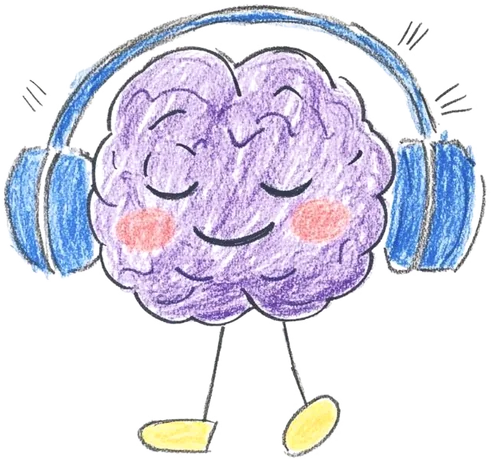
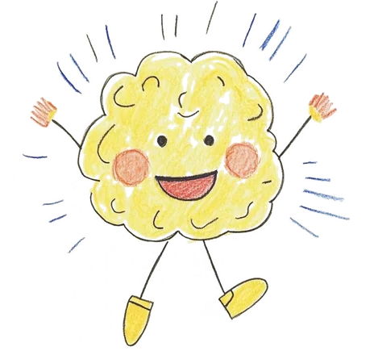

VOOR KINDEREN VAN 3 TOT 8 JAAR
Elk breintje is bijzonder.
Hier vind je liedjes, verhaaltjes, rustmomenten, oefeningen en knutsels. Voor kinderen met een bijzonder breintje. En voor hun grote mensen.
Geen twee breintjes zijn hetzelfde.
Wat wil je doen?
BREINTJES-CLUB PLUS
Elke maand iets nieuws om samen te voelen
Een liedje, een voorleesverhaaltje, een rustmoment, een printblad en een tip voor ouders.
Liedjes
Luister en zing mee.
Verhaaltjes
Lees mee. Of laat het voorlezen.
Rustmoment
Even stil worden. Het hoeft niet te lukken.
Oefeningen
Kom uit je stoel. Doe mee.
Knutselen
Maak iets met je handen.
Filmpjes
Kijk maar. Je mag zo vaak kijken als je wilt.
Tekeningen
Print een kleurplaat. Kleur het breintje zoals jij wilt.
Weerbericht
Hoe is het weer in jouw hoofd? Elk weer mag er zijn.
Dit ben ik
Maak samen een kaart voor de juf, de opvang of opa en oma.
Dit is een voorbeeld met Sam. Vul hem samen met je kind in, dan wordt het jullie eigen kaart.
Wie ben jij?
Geen foto? Dan blijft er een rondje leeg waarin je kind zichzelf kan tekenen.
Je kunt de kaart ook ingedrukt houden (of rechts aanklikken) en als plaatje bewaren.
Print hem op A4 en geef hem aan de juf, de opvang of opa en oma. Wat je invult blijft alleen op dit apparaat staan.

BREINTJES-CLUB PLUS
Elke maand iets nieuws om samen te voelen
Voor kinderen van 3 tot 8 jaar met een bijzonder breintje, en voor hun ouders.
Dit krijg je elke maand
Eén gevoel per maand, met alles wat je nodig hebt om er samen mee bezig te zijn.
- Een liedjeKort, om samen te zingen en te herhalen.
- Een voorleesverhaaltjeDrie minuten, met vragen om over te praten.
- Een rustmomentEen meditatie om te landen, overdag of voor het slapen.
- Een printbladOm te kleuren, in te vullen en op te hangen.
- Een tip voor oudersEén ding dat je deze maand kunt proberen.
Zo werkt het
Je meldt je aan en krijgt de link naar de Breintjes-club Plus.
Je zet de club op het beginscherm van je telefoon of tablet.
Elke maand staat er een nieuw pakket klaar. Alles van eerder blijft erin staan.
Wat we beloven
- Geen punten, geen reeksen en geen meldingen.
- Niets speelt automatisch door. Rust gaat voor schermtijd.
- Nooit reclame, en we verzamelen niets over je kind.
Doe je mee?
Aanmelden kan binnenkortWe zetten de laatste puntjes op de i.
Vragen
Voor welke leeftijd is het?
Voor kinderen van 3 tot 8 jaar. Jonge kinderen doen het samen met jou, oudere kinderen kiezen vaak zelf.
Heeft mijn kind een diagnose nodig?
Nee. De club is er voor elk kind dat veel voelt, snel vol zit of zijn gevoel nog moeilijk kan zeggen.
Waarop werkt het?
Op een telefoon, tablet en computer, in de browser. Je hoeft niets te installeren.
Wie maken het?
Nicky en Gert van Bijzondere Breintjes. We schrijven, zingen en tekenen alles zelf.
Wie zijn wij
De mensen achter Bijzondere Breintjes.


Voor grote mensen
Hoe deze website werkt.
Bijzondere Breintjes maakt liedjes, verhaaltjes, rustmomenten, oefeningen, knutsels, filmpjes en tekeningen voor kinderen van 3 tot 8 jaar. Voor ieder kind, en zeker ook voor kinderen bij wie het in hun hoofd net even anders gaat.
Sommige kinderen horen en zien snel te veel. Andere willen graag weten wat er komt, of luisteren het liefst tien keer naar hetzelfde liedje. Dat mag hier allemaal.
De rustmomenten en oefeningen zijn spelletjes, geen behandeling. Lukt iets niet, dan is dat goed. Stoppen mag altijd.
Zo is deze website gemaakt
- Niets begint vanzelf
- Muziek en filmpjes starten pas als je kind zelf op de knop drukt.
- De knop Rustig
- Staat bovenaan. Zet beweging uit en maakt de kleuren zachter. Dit apparaat onthoudt de keuze.
- Eén ding tegelijk
- Elk onderdeel heeft een eigen tabblad, een vaste kleur en een vast plaatje. Er staat nooit meer op het scherm dan nodig.
- Geen punten, geen reeksen, geen meldingen
- Niets speelt automatisch door. Rust gaat voor schermtijd.
- Geen reclame, geen cookies
- We volgen niemand en verzamelen niets over je kind. Een filmpje van YouTube laadt pas na een druk op de knop.

Heb jij een idee?
Waar moet het volgende liedje of verhaaltje over gaan? Laat het ons weten.